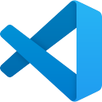

Lógica de Programação com Python
Bem-vindos à programação em Python
Do primeiro algoritmo desenhado no papel à ferramenta de segurança que você mesmo programa.
Antes de digitar código, a gente aprende a pensar como o computador. Depois o pensamento vira Python: validar senhas, contar tentativas de login, cifrar mensagens e, no fim, construir uma ferramenta de segurança da informação de verdade.
1# SI · 1º e 2º semestres · 70h2turma = "filhotes"3energia = float("inf")45print(f"Bem-vindos, {turma}!")Afinal, o que é esse tal de Python?
É a linguagem que se lê quase como inglês. Simples para começar e poderosa para a vida toda: vai de automação a inteligência artificial, e é uma das favoritas de quem trabalha com segurança da informação.
- ProblemaUma situação real, como bloquear quem erra a senha três vezes.
- AlgoritmoO passo a passo em português ou num fluxograma.
- PythonO algoritmo vira código no VS Code.
- ExecuçãoO computador segue as instruções e mostra o resultado.
no ranking das linguagens
Python lidera o índice TIOBE, que mede a popularidade das linguagens de programação, com folga sobre a segunda colocada.
Fonte: índice TIOBE, setembro de 2026.
Nome de comédia, não de cobra
Guido van Rossum batizou a linguagem em homenagem ao grupo de humor britânico Monty Python. A cobra veio depois.
Nasceu em 1991
A primeira versão pública saiu em 1991. Mais de 30 anos depois, ela continua crescendo.
Queridinha de quem protege sistemas
Ferramentas conhecidas de segurança, como o sqlmap e o Scapy, são escritas em Python. Você vai entender por quê.
Digite import this
Aparece o "Zen do Python", com frases como "bonito é melhor que feio" e "legibilidade conta". É o manual de boas maneiras da linguagem.
Python rodando dentro do navegador
Os exercícios da atividade remota executam Python direto nesta página, sem instalar nada. Por trás está o Pyodide, uma versão do Python feita para a web.
Pensar antes de programar
A ementa oficial, palavra por palavra. O resto do semestre é colocar isso em prática.
Apresentar os fundamentos da lógica de programação por meio da linguagem Python, desenvolvendo a capacidade de resolver problemas computacionais por meio da construção de algoritmos estruturados, utilizando boas práticas de codificação e pensamento lógico.
Aonde a gente quer chegar
Capacitar os alunos a construir algoritmos estruturados e programas na linguagem Python, aplicando o pensamento lógico e as boas práticas de codificação na resolução de problemas computacionais do cenário profissional da segurança da informação.
- Compreender os fundamentos da lógica de programação e a construção de algoritmos estruturados.
- Aplicar variáveis, tipos de dados, operadores e estruturas de decisão e repetição em programas Python.
- Utilizar estruturas de dados e funções da linguagem Python na resolução de problemas computacionais.
- Empregar boas práticas de codificação na construção, depuração e documentação de programas.
Cinco unidades, uma ferramenta de segurança
Cada unidade acrescenta uma peça. No fim, elas viram o projeto final.
Fundamentos da lógica de programação
Pensar como o computador, antes de falar com ele.
- Pensamento lógico e computacional
- Conceito de algoritmo e sequência lógica
- Representação de algoritmos: descrição narrativa, pseudocódigo e fluxograma
Introdução à linguagem Python
O primeiro "olá" e as primeiras contas.
- Ambiente de desenvolvimento e execução de programas Python
- Variáveis, tipos de dados e conversão de tipos
- Entrada e saída de dados
- Operadores aritméticos, relacionais e lógicos
Algoritmos estruturados: decisão e repetição
O programa escolhe caminhos e repete até acertar.
- Estruturas de decisão (if, elif e else)
- Estruturas de repetição (while e for)
- Contadores, acumuladores e controle de laços
Estruturas de dados e funções
Listas de IPs, dicionários de permissões e código que se reaproveita.
- Strings, listas, tuplas e dicionários
- Funções: definição, parâmetros, retorno e escopo
- Módulos e bibliotecas padrão
Boas práticas e resolução de problemas
Código limpo, erros tratados e uma ferramenta de segurança funcionando.
- Boas práticas de codificação (PEP 8, nomenclatura e comentários)
- Tratamento de exceções e depuração de programas
- Resolução de problemas computacionais aplicados à segurança da informação
Dezoito encontros, uma trilha
Segundas de manhã e alguns sábados. A próxima aula aparece destacada.
-
Conhecendo a disciplina e o pensamento computacional
A01 -
O que é um algoritmo?
A02 -
Desenhando a lógica com fluxogramas
A03 -
Preparando o ambiente: meu primeiro programa em Python
A04 -
Variáveis, tipos e entrada de dados
A05 -
Operadores e expressões
A06 -
Como um sistema decide quem pode entrar?
A07 -
Revisão e atividade avaliativa prática do 1º bimestre
A08 -
Avaliação do 1º bimestre
A09 -
Repetindo até acertar: a estrutura while
A10 -
Repetição com for e range()
A11 -
Strings: validando senhas e cifrando mensagens
A12 -
Listas: analisando registros de acesso
A13 -
Tuplas e dicionários: usuários e permissões
A14 -
Funções: organizando e reaproveitando código
A15 -
Módulos, exceções, boas práticas e desenvolvimento do projeto
A16 -
Apresentação dos projetos finais
A17 -
Devolutiva e encerramento
A18
Do papel ao código, do código à segurança
Primeiro a lógica: pseudocódigo e fluxogramas no Flowgorithm e no Whiteboard. Depois o Python no VS Code, com desafios progressivos tirados do dia a dia da segurança da informação: validar senhas, controlar tentativas de acesso, cifrar mensagens.
O curso Python Essentials da NetAcad acompanha a disciplina e prepara para a certificação PCEP. A IA entra com senso crítico, para explicar e revisar código, e tem dia sem IA para você ver o quanto já anda sozinho.
Curto-circuito? Lê a mensagem de erro: ela diz a linha e quase sempre dá a dica.

VS Code Flowgorithm NetAcad Python EssentialsComo a nota é montada
Dez pontos por bimestre. No segundo, a nota principal vem do projeto final.
10 pontos
- Prova objetiva6,0
- Atividade avaliativa prática4,0
10 pontos
- Apresentação do projeto final7,0
- Avaliação Integrada2,0
- Participação na Jornada Interdisciplinar1,0
Para ser aprovado: média final de 6,0 e pelo menos 75% de frequência.
Atividades e materiais
Tudo o que a gente usa na disciplina, num lugar só.
Plantão de segurança (05/10)
Cinco exercícios que rodam e se corrigem no próprio site. Para quem já fez a prova do 1º bimestre.
PyQuiz: revisão do 1º bimestre
30 questões embaralhadas, com explicação em cada resposta, num visual hacker.
Exercícios no GitHub Classroom
Básicos, condicionais, repetições, funções e desafios, com testes para conferir.
Python Essentials
A trilha que acompanha a disciplina e prepara para a certificação PCEP.
PlataformatrilhaPara ir além da aula
- Aprenda a programar com PythonSOARES, L.; FORTES, G. São Paulo: Casa do Código, 2022. E-book.
- Algoritmos: teoria e práticaCORMEN, Thomas H.; LEISERSON, Charles E.; RIVEST, Ronald L. 2. ed. Rio de Janeiro: Campus, 2012.
- Python: escreva seus primeiros programasCRUZ, F. Casa do Código, 2015. E-book.
- Algoritmos e programação de computadoresPIVA JUNIOR, Dilermando; ENGELBRECHT, Angela de Mendonça; NAKAMITI, Gilberto Shigueo. Rio de Janeiro: Campus, 2012.
- Algoritmos: lógica para desenvolvimento de programação de computadoresMANZANO, José Augusto N. G.; OLIVEIRA, Jays Figueiredo. 22. ed. São Paulo: Érica, 2009.